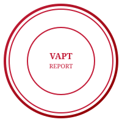

Purpose: This assessment was conducted in support of compliance with the Federal Inland Revenue Service (FIRS) e-Invoicing mandate and related System Integrator / Access Point Provider requirements. This report may be submitted to FIRS as evidence of security assessment of the invoice API used for e-Invoicing.
This report presents the findings of a Vulnerability Assessment and Penetration Testing (VAPT) engagement performed on the FlowBooks Invoice API, which provides FIRS e-Invoicing compliance through Create Invoice, Lookup Status, and Payment Notification endpoints.
In-scope components:
POST /api/v1/invoice/createPOST /api/v1/invoice/statusPOST /api/v1/invoice/payment/notify/flowbooks-api-docs)| Severity | Count | Remediated |
|---|---|---|
| Critical | 0 | — |
| High | 0 | 1 (VAPT-INV-001) |
| Medium | 3 | — |
| Low | 2 | — |
| Informational | 2 | — |
Overall risk: Low–Medium. The High finding (VAPT-INV-001 – Missing Authentication & Authorization) has been remediated and the platform has been updated: JWT authentication (Passport) and facility-scoped authorization are now enforced on all FlowBooks Invoice API endpoints. Remaining Medium and Low findings should be addressed as per recommendations.
Standards referenced: OWASP Top 10, OWASP API Security Top 10, PTES
Approach: Document review, static analysis, manual testing of API endpoints (create, status, payment/notify)
Tools/techniques: Manual request/response inspection, parameter tampering, authentication bypass checks, error-message analysis, configuration review
| Item | Detail |
|---|---|
| API base | /api/v1/invoice/* |
| Backend | Node.js / Express |
| Proxy | Requests forwarded to FlowBooks Connect Gateway |
| Secrets | FLOWBOOKS_SECRET_KEY, FLOWBOOKS_BASE_URL (env) |
| Documentation | Swagger UI at /flowbooks-api-docs |
Full finding details (5.1–5.8) including VAPT-INV-001 remediation and implementation details are as per the main report. Summary: VAPT-INV-001 (High) remediated with JWT authentication and facility-scoped authorization; remaining findings Medium (3), Low (2), Informational (2) open.
| ID | Finding | Severity | Risk | Status |
|---|---|---|---|---|
| VAPT-INV-001 | Missing authentication/authorization | High | High | Remediated |
| VAPT-INV-002 | Sensitive configuration in error messages | Medium | Medium | Open |
| VAPT-INV-003 | Lack of input validation | Medium | Medium | Open |
| VAPT-INV-004 | No rate limiting | Medium | Medium | Open |
| VAPT-INV-005 | API documentation publicly accessible | Low | Low | Open |
| VAPT-INV-006 | Verbose proxy error responses | Low | Low | Open |
| VAPT-INV-007 | Deprecated request library | Info | Info | Open |
| VAPT-INV-008 | CORS / Helmet review | Info | Info | Informational |
/flowbooks-api-docs.The FlowBooks Invoice API provides necessary integration points for FIRS e-Invoicing. The High finding (VAPT-INV-001 – Missing Authentication & Authorization) has been remediated and the platform has been updated: JWT authentication and facility-scoped authorization are enforced on all invoice endpoints. Overall risk is Low–Medium. Addressing the remaining Medium and Low findings will further improve security and compliance posture. Re-assessment after full remediation is recommended.
Report prepared for: Brainstorm IT Solutions
Assessment performed by: Brainstorm Group, headed by Ayomide (Okikiola) Elemeje, Cybersecurity Analyst | Penetration Tester
Next review: March 2026 (one month from assessment)
Authorised for submission to: Federal Inland Revenue Service (FIRS), in support of e-Invoicing compliance requirements.
|
Assessor / Prepared by Signature Name: Ayomide (Okikiola) Elemeje Title: Cybersecurity Analyst | Penetration Tester Date: _________________________  |
Authorised by (Client) Signature Name: _________________________ Title: _________________________ Date: _________________________ Brainstorm IT Solutions |
This report is confidential and intended for the use of the commissioning organization. Unauthorized distribution is prohibited.